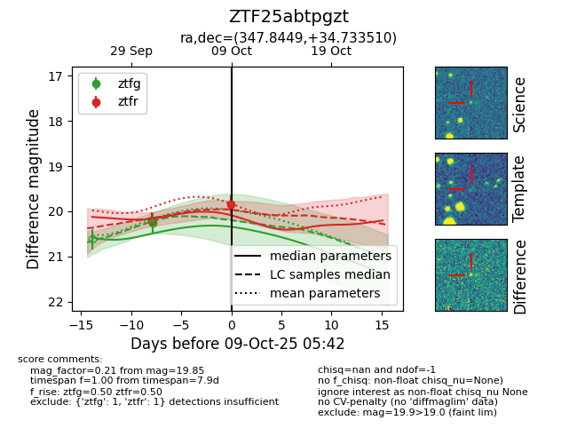
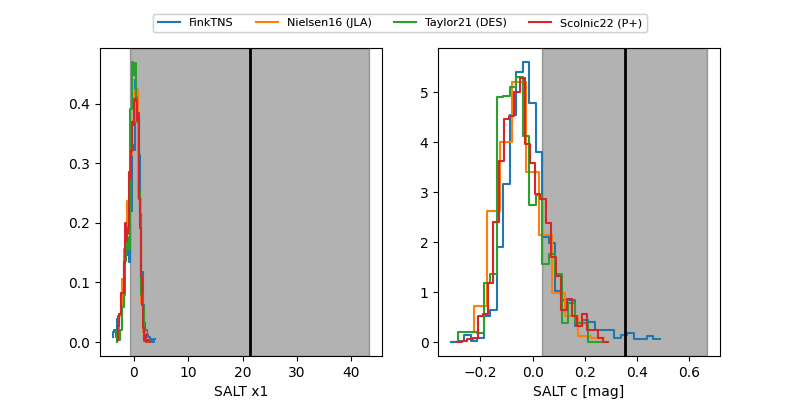

FINK: ZTF25abtpgzt
Lasair: ZTF25abtpgzt
ALeRCE: ZTF25abtpgzt
ZTF25abtpgzt (ztf,fink)
equatorial (ra, dec) = (347.8449,+34.73351)
galactic (l, b) = (100.6169,-23.76555)


last ztfg=20.25, ztfr=19.85
1 ztfg, 1 ztfr detections